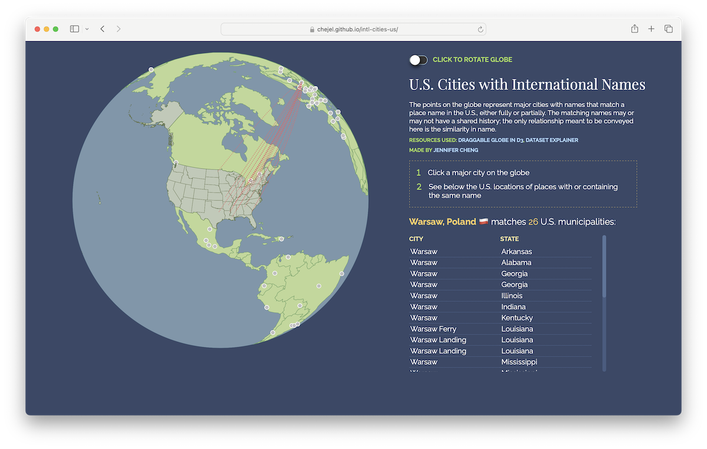

us_muni_edit <- us_muni %>%
filter(!str_detect(feature_name, regex("(historical)"))) %>%
filter(!prim_lat_dec==0) %>%
# remove white space
mutate(feature_name = str_squish(feature_name))This post describes how I put together the dataset for this map that finds US municipalities that match or include as part of its name a country or international city in English.
Gathering the data
Dataset: Names of municipalities in the US
The U.S. Board on Geographic Names has available the names of geographic entities in U.S. states, including municipalities, buildings, properties, natural features and more. Data is also available on geographic names across the world.
For this exercise, I downloadeded the file PopulatedPlaces_National_Text.zip via the Domestic Names page:
After scanning through the dataset, I’m removing places with (historical) in the name and without a geographic location provided.
Dataset: Names of countries and international cities
The maps package provides a list of cities via the world.cities dataframe, which includes the country name, population, latitude and longitude coordinates, and whether the city is the capital.
glimpse(maps::world.cities)Rows: 43,645
Columns: 6
$ name <chr> "'Abasan al-Jadidah", "'Abasan al-Kabirah", "'Abdul Hakim"…
$ country.etc <chr> "Palestine", "Palestine", "Pakistan", "Kuwait", "Palestine…
$ pop <int> 5629, 18999, 47788, 21817, 2456, 3434, 9198, 5492, 22706, …
$ lat <dbl> 31.31, 31.32, 30.55, 29.36, 32.03, 32.03, 9.77, 2.75, 32.0…
$ long <dbl> 34.34, 34.35, 72.11, 47.98, 35.07, 35.20, 44.65, 46.30, 45…
$ capital <int> 0, 0, 0, 0, 0, 0, 0, 0, 0, 0, 0, 0, 0, 0, 0, 0, 0, 0, 0, 0…- To narrow down the more than 43,500 cities, I’ll filter for only cities with more than 1 million residents, not including metro areas.
- For each country and international city name, I will add to the end of each name
\\b, the regular expression to indicate that it’s the end of the word. This way, I will be able to search for US municipalities that contain the name on its own, either by itself or with another word but not as part of a word: This would include “Canada Shores, Michigan” but not “Jordantown, New Jersey.”
cities_1m <- maps::world.cities %>%
# include only cities with more than 1m people
filter(pop > 1000000) %>%
# remove US cities
filter(country.etc != "USA") %>%
# add regex to city and country names so that results won't return int'l names within a US city
mutate(city_regex = paste0(name, "\\b")) %>%
mutate(country_regex = paste0(country.etc, "\\b"))
# since I'm taking a random sample of five rows, I will use set.seed() to get the same five rows each time the code is run
set.seed(10)
sample_n(cities_1m, 5) name country.etc pop lat long capital city_regex
1 Kazan Russia 1104802 55.75 49.13 0 Kazan\\b
2 Delhi India 11215130 28.67 77.21 0 Delhi\\b
3 Pretoria South Africa 1687779 -25.73 28.22 1 Pretoria\\b
4 Tehran Iran 7160094 35.67 51.43 1 Tehran\\b
5 Kobe Japan 1535384 34.68 135.17 0 Kobe\\b
country_regex
1 Russia\\b
2 India\\b
3 South Africa\\b
4 Iran\\b
5 Japan\\bMatching countries
To “match” US names to country names:
- The column of country names, which will have repeated names, from the
cities_1mdataframe (above) will be separated by a vertical bar (|) so that each country name will be searched for among the column of US names and if found, the US names containing a country name will be “extracted” (i.e. kept) in the final list. This will go in thematchcolumn. - Add a column containing the continent name based on the country names in the
matchcolumn using thecountrycodepackage. (source)
country_matches <- us_muni_edit %>%
# match US city to country names
mutate(match = str_extract(feature_name, paste(cities_1m$country_regex, collapse="|"))) %>%
drop_na(match) %>% # remove US names that did not "match" any country name
# add continent
mutate(continent = countrycode::countrycode(sourcevar = match,
origin = "country.name",
destination = "continent"))
# narrow down variablesA sample of the final dataframe of US municipalities that now includes the name of a country.
set.seed(123) # set.seed() lets you see the same random sample each time you run the code
sample_n(country_matches, 10) feature_id feature_name feature_class state_name
1 1379539 China Creek Populated Place Texas
2 1554236 Cuba Populated Place West Virginia
3 607936 Peru Populated Place Massachusetts
4 2481457 Armenia Terrace Populated Place Florida
5 669699 Egypt Populated Place Mississippi
6 490449 Cuba Populated Place Kentucky
7 1049099 Poland Center Populated Place Ohio
8 867976 Lebanon Populated Place New Hampshire
9 942484 Angola Lake Shore Addition Populated Place New York
10 57707 Egypt Populated Place Arkansas
state_numeric county_name county_numeric map_name date_created
1 48 San Saba 411 Blucher Mountain 11/30/1979
2 54 Jackson 35 Sandyville 06/27/1980
3 25 Berkshire 3 Peru 02/24/1974
4 12 Hillsborough 57 Sulphur Springs 07/18/2008
5 28 Holmes 51 Montgomery 09/24/1980
6 21 Graves 83 Cuba 09/20/1979
7 39 Mahoning 99 Campbell 07/12/1979
8 33 Grafton 9 Hanover 08/27/1980
9 36 Erie 29 Farnham 01/23/1980
10 5 Craighead 31 Cash 04/30/1980
date_edited bgn_type bgn_authority bgn_date prim_lat_dms prim_long_dms
1 06/07/2022 311533N 0984723W
2 06/07/2022 385928N 0814008W
3 12/02/2019 422617N 0730245W
4 06/07/2022 280005N 0822910W
5 06/07/2022 332028N 0901638W
6 06/07/2022 363506N 0883745W
7 09/30/2019 410126N 0803402W
8 06/07/2022 433832N 0721506W
9 09/11/2019 423705N 0790554W
10 06/07/2022 355205N 0905644W
prim_lat_dec prim_long_dec match continent
1 31.25906 -98.78977 China Asia
2 38.99119 -81.66902 Cuba Americas
3 42.43814 -73.04593 Peru Americas
4 28.00140 -82.48600 Armenia Asia
5 33.34123 -90.27731 Egypt Africa
6 36.58506 -88.62922 Cuba Americas
7 41.02395 -80.56729 Poland Europe
8 43.64229 -72.25176 Lebanon Asia
9 42.61811 -79.09837 Angola Africa
10 35.86813 -90.94568 Egypt AfricaMatching international cities
Following the same steps above, this time matching US municipalities to international city names. And:
- Joining this dataframe with the
cities_1min order to include the country for each city. - As “Serbia and Montenegro” was given as the country for “Belgrade”, changing the name to “Serbia”.
city_matches <- us_muni_edit %>%
# match US city to int'l city names
mutate(match = str_extract(feature_name, paste(cities_1m$city_regex, collapse="|"))) %>%
drop_na(match) %>%
# add country to match (city)
left_join(cities_1m, by = c("match" = "name")) %>%
select(-lat, -long) %>% # removing these cols from cities_1m to avoid confusion
# change "Serbia and Montenegro" to "Serbia"
mutate(country.etc = str_replace(country.etc, "Serbia and Montenegro", "Serbia")) %>%
# add continent
mutate(continent = countrycode::countrycode(sourcevar = country.etc,
origin = "country.name",
destination = "continent")) %>%
# add coordinates for the int'l cities using tidygeocoder pkg
mutate(address = paste0(match, ", ", country.etc)) %>%
geocode(address, method="osm", lat=city_lat, long=city_long) %>%
# narrow down columns
select(us_city=feature_name, state_name, us_city_lat=prim_lat_dec, us_city_long=prim_long_dec, intl_city=match, country=country.etc, city_lat, city_long, continent)A sample of the final dataframe for US towns and cities containing the names of international cities.
# see sample of result
set.seed(123)
sample_n(city_matches, 10)# A tibble: 10 × 9
us_city state…¹ us_ci…² us_ci…³ intl_…⁴ country city_…⁵ city_…⁶ conti…⁷
<chr> <chr> <dbl> <dbl> <chr> <chr> <dbl> <dbl> <chr>
1 New London North … 35.4 -80.2 London UK 51.5 -0.144 Europe
2 Delhi Ohio 39.1 -84.6 Delhi India 28.6 77.2 Asia
3 Tripoli Iowa 42.8 -92.3 Tripoli Libya 32.9 13.2 Africa
4 Paris Point South … 34.9 -82.4 Paris France 48.9 2.35 Europe
5 Hamburg Kansas 38.1 -99.2 Hamburg Germany 53.6 10.0 Europe
6 Brussels Illino… 38.9 -90.6 Brusse… Belgium 50.9 4.35 Europe
7 Melbourne Missou… 40.1 -93.8 Melbou… Austra… -37.8 145. Oceania
8 North Belgra… Maine 44.5 -69.8 Belgra… Serbia 44.8 20.5 Europe
9 New London Maryla… 39.4 -77.3 London UK 51.5 -0.144 Europe
10 Prague Arkans… 34.3 -92.3 Prague Czech … 50.1 14.4 Europe
# … with abbreviated variable names ¹state_name, ²us_city_lat, ³us_city_long,
# ⁴intl_city, ⁵city_lat, ⁶city_long, ⁷continentA Final List
After exporting city_matches via write_csv(city_matches, "city_matches.csv"), I used D3.js to create a map that lets users click a major non-US city and see the locations of US towns and cities that share the name. I’ll save country_matches maybe for another time.
To end this post, here are the top 10 international cities that appear most frequently as or within US municipality names:
city_matches %>% count(intl_city, sort=T)# A tibble: 71 × 2
intl_city n
<chr> <int>
1 Berlin 57
2 London 49
3 Paris 46
4 Dublin 38
5 Rome 37
6 Hamburg 35
7 Leon 33
8 Cairo 30
9 Vienna 29
10 Damascus 27
# … with 61 more rows